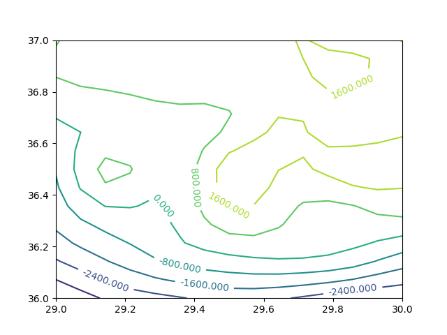
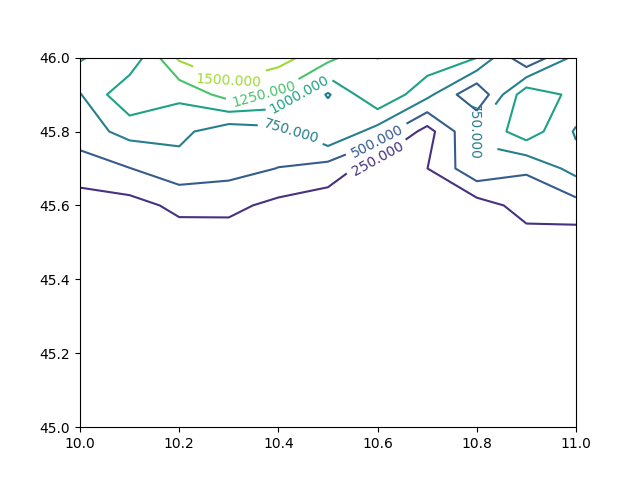
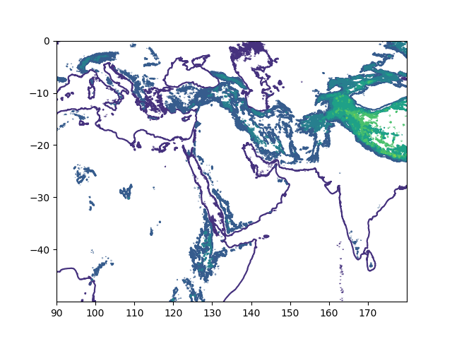

Yükseklik (Elevation) Verileri
Hangi servis ile yükseklik verisi alınır? Google Elevation servisi var, belli miktarda kullanım için bedava, sonrası için fiyatlı. Google Console'dan proje yaratıp projede elevation servisini aktif hale getirmek lazım, bundan sonra proje API kodunu kullanıp ES çağrılabilir.
from urllib.request import urlopen
import polyline, json
elev_query = "https://maps.googleapis.com/maps/api/elevation/json?" + \
"locations=enc:%s&key=%s"
#key = "[ANAHTAR DEGERI]"
locs = [[40.994252, 29.037847],[40.991771, 29.061873]]
locs = polyline.encode(locs)
url = elev_query % (locs, key)
html = urlopen(url)
json_res = json.loads(html.read().decode('utf-8'))
print (json_res)
{'status': 'OK', 'results': [{'resolution': 610.8129272460938,
'location': {'lng': 29.03785, 'lat': 40.99425}, 'elevation':
9.726478576660156}, {'resolution': 610.8129272460938, 'location':
{'lng': 29.06187, 'lat': 40.99177}, 'elevation': 58.94558334350586}]}
Velroutes (Bedava)
Bir diğer seçenek veloroutes.org adresi; burada arkadaş bedava servis veriyor; onun sayfalarından "kazıyarak" istenen veriyi alabiliriz,
import re
url = "http://veloroutes.org/elevation/?" + \
"location=41.40000%2C28.15000&units=m"
html = urlopen(url)
res = html.read().decode('utf-8')
p = "Elevation for .*? <span style=\"font-size\:20px\">(\d*)</span> meters"
rres = re.findall(p,res)
print (float(rres[0]))
215.0
Bir diğeri elevation.racemap.com adresinden; bu arkadaşlar da bedava servis veriyorlar, Curl kullanıp
! curl -d '[[51.3, 13.4], [51.4, 13.3]]' -XPOST \
-H 'Content-Type: application/json' \
https://elevation.racemap.com/api
% Total % Received % Xferd Average Speed Time Time Time Current
Dload Upload Total Spent Left Speed
0 0 0 0 0 0 0 0 --:--:-- --:--:-- --:--:-- 0100 37 100 9 100 28 8 27 0:00:01 0:00:01 --:--:-- 27100 37 100 9 100 28 8 27 0:00:01 0:00:01 --:--:-- 27
[101,100]
Bu komutu tabii ki sarmalayıp sonucu bir yere yazdırıp Python ile
güzel liste döndürmesi için ayarlayabiliriz. Ya da requests
kullanarak aynı çağrıyı yapabiliriz,
import requests
headers = { 'Content-Type': 'application/json', }
data = '[[51.3, 13.4], [51.4, 13.3]]'
response = requests.post('https://elevation.racemap.com/api',
headers=headers, data=data)
print(response.text)
Daha Çetrefil Kullanım
Alttaki örnekte bir kordinat alanıda 7 x 7 büyüklüğünde bir ızgara yaratıyoruz, o ızgara öğe kordinatları için yükseklik verisini alıyoruz, ve RBF tekniği [1] ile aradeğerleme (interpolation) yaparak yüksekliği yaklaşık şekilde temsil ediyoruz.
import requests
def get_elev_data(coords):
chunk = [list(x) for x in coords]
data = "["
for i,x in enumerate(chunk):
data += str(x)
if i != len(chunk)-1: data += ","
data += "]"
response = requests.post('https://elevation.racemap.com/api',
headers={'Content-Type': 'application/json',},
data=data)
res = response.text
res = res.replace("]","").replace("[","")
res = res.split(",")
res = [float(x) for x in res]
return res
Veri alındı, şimdi RBF,
from scipy.interpolate import Rbf
latlow = 36; lathigh = 37
lonlow = 29; lonhigh = 30
D = 7
x = np.linspace(lonlow,lonhigh,D)
y = np.linspace(latlow,lathigh,D)
xx,yy = np.meshgrid(x,y)
xxf = xx.reshape(D*D)
yyf = yy.reshape(D*D)
sampleCoords = []
for yyy,xxx in zip(yyf,xxf):
sampleCoords.append([yyy,xxx])
sampleCoords = np.array(sampleCoords)
print (sampleCoords.shape)
zr = np.array(get_elev_data(sampleCoords))
yr = sampleCoords[:,0]
xr = sampleCoords[:,1]
rbfi = Rbf(xr,yr,zr,function='multiquadric')
(49, 2)
Şimdi RBF kullanarak daha yüksek çözünürlü bir ızgara için yüksekliği aradeğerleme ile hesaplatabiliriz, altta 15 x 15 büyüklüğünde bir ızgara için bunu yapıyoruz,
D = 15
x = np.linspace(lonlow,lonhigh,D)
y = np.linspace(latlow,lathigh,D)
xx,yy = np.meshgrid(x,y)
yhat = rbfi(xx,yy)
fig, ax = plt.subplots()
CS = ax.contour(xx,yy,yhat)
plt.clabel(CS, inline=1, fontsize=10)
plt.savefig('elev1.png')

DEM, GeoTiff
Yüksekliği gösteren ısı / renk haritaları görmüşüzdür, daha yüksek yerler daha kırmızımsı, daha alçaklar daha koyu gibi.. O zaman piksel yükseklik gösteriyorsa ve pikselleri depolayan teknoloji iyi durumdaysa, aynı işi yükseklik verisi kodlamak için de kullanabiliriz. DEM, GeoTiff formatı bunu yapar. Dünya verisi [2]'de, Zipped DEM GeoTiff indirilir, okumak için [3]. Örnek (İtalya'da bir yer)
from geotiff import GeoTiff
import matplotlib.pyplot as plt
tiff_file = "/tmp/alwdgg.tif"
area_box = ((10, 45), (11, 46))
g = GeoTiff(tiff_file, crs_code=4326, as_crs=4326, band=0)
arr = g.read_box(area_box)
arr = np.flip(arr,axis=0)
print (arr.shape)
X = np.linspace(area_box[0][0],area_box[1][0],11)
Y = np.linspace(area_box[0][1],area_box[1][1],11)
X,Y = np.meshgrid(X,Y)
CS=plt.contour(X,Y,arr)
plt.clabel(CS, fontsize=10, inline=1)
plt.savefig('elev2.png')
(11, 11)

area_box içinde alt sol köse ve üşe sağ köşe verildi, bir kutu oluşturuldu,
ve kutu içine düşen yükseklik verisi read_box ile alındı.
[2] verisinin çözünülürlüğü en yüksek olduğu yerde "1 dakika" olarak verilmiş, yani aşağı yukarı 1 km x 1 km karelerinin yükseklik verisi alınabilir. Dosyanin büyüklüğü 20 MB'dan daha az. [3] kullanımı önemli çünkü bazı alternatif GeoTiff okuma yöntemleri GDAL kurulmasının gerektirir, [3] kütüphanesi hafif, direk DEM dosyalarının içeriğini okuyabilir.
GLOBE
Bir yöntem daha. GLOBE veri seti [4], tam ismiyle Global Land One-kilometer Base Elevation, NOAA kurumu tarafından paylaşılıyor. Kabaca verideki frekansa bakılırsa kilometre kare başına bir yükseklik noktası olduğu söylenebilir. Çok detaylı grafikleme için yeterli olmayabilir fakat geniş alanların yükseklik haritası için yeterli.
Bu verinin iyi bir tarafı verinin Numpy matrisi olarak direk okunabilmesi. [4] bağlantısındaki haritaya bakılınca dünya A,B,C,D vs parçalarına bölünmüş, her bölümün yükseklik verisi ayrı bir dosyada. Tüm verileri tek bir zip dosyası olarak indirebiliriz, 300 MB civarı, A,B,C,D bölge dosyaları bu zip içinde, "All Tiles in One .zip file" seçeneği. Çoğu yükseklik matrisi 10800 kolon, 4800 satır olacaktır, bazıları daha az, altta her bölgenin boyutları var.
Zip dosyasını açalım, alttaki kod g10g bölgesini okuyup haritalıyor,
[5] kodu örnek alındı, downsample ile veriyi daha da azalttığımızı
görebiliyoruz, istemeyenler bu satırı çıkartıp ya da downsample=1
ile veriyi olduğu gibi kullanabilir.
gltiles = {
"a10g": [50, 90, -180, -90, 1, 6098, 10800, 4800],
"b10g": [50, 90, -90, 0, 1, 3940, 10800, 4800],
"c10g": [50, 90, 0, 90, -30, 4010, 10800, 4800],
"d10g": [50, 90, 90, 180, 1, 4588, 10800, 4800],
"e10g": [0, 50, -180, -90, -84, 5443, 10800, 6000],
"f10g": [0, 50, -90, 0, -40, 6085, 10800, 6000],
"g10g": [0, 50, 0, 90, -407, 8752, 10800, 6000],
"h10g": [0, 50, 90, 180, -63, 7491, 10800, 6000],
"i10g": [-50, 0, -180, -90, 1, 2732, 10800, 6000],
"j10g": [-50, 0, -90, 0, -127, 6798, 10800, 6000],
"k10g": [-50, 0, 0, 90, 1, 5825, 10800, 6000],
"l10g": [-50, 0, 90, 180, 1, 5179, 10800, 6000],
"m10g": [-90, -50, -180, -90, 1, 4009, 10800, 4800],
"n10g": [-90, -50, -90, 0, 1, 4743, 10800, 4800],
"o10g": [-90, -50, 0, 90, 1, 4039, 10800, 4800],
"p10g": [-90, -50, 90, 180, 1, 4363, 10800, 4800] }
z = np.fromfile('all10g/all10/g10g',dtype='<i2')
lat_min, lat_max, lon_min, lon_max, elev_min, elev_max, cols, rows = gltiles['g10g']
z = np.reshape(z,(round(z.__len__()/cols), cols))
z[z==-500]=0
lon = lon_min + 1/120*np.arange(cols)
lat = lat_max - 1/120*np.arange(round(z.size/cols))
downsample = 2
lat_select = np.arange(0,len(lat),downsample)
lon_select = np.arange(0,len(lon),downsample)
y = lat[lat_select]
x = lon[lon_select]
xg, yg = np.meshgrid(x, y)
zm = z[np.ix_(lat_select,lon_select)]
plt.contour(xg,yg,zm)
plt.savefig('gltiles1.png')

Kaynaklar
[1] [RBF](https://burakbayramli.github.io/dersblog/stat/stat175rbf/daireselbazfonksiyonlariradialbasisfunctionsrbfyukseklikverisi_daglar.html)
[2] World digital elevation model (ETOPO5), https://www.eea.europa.eu/data-and-maps/data/world-digital-elevation-model-etopo5
[3] https://github.com/KipCrossing/geotiff
[4] [GLOBE](https://www.ngdc.noaa.gov/mgg/topo/gltiles.html)
[5] https://github.com/developmentseed/landsat-util
[6] [Yükseklik Verisini Kontur olarak Folium Haritasında Göstermek](../../2021/11/yukseklik-kontur-folium-harita.html)